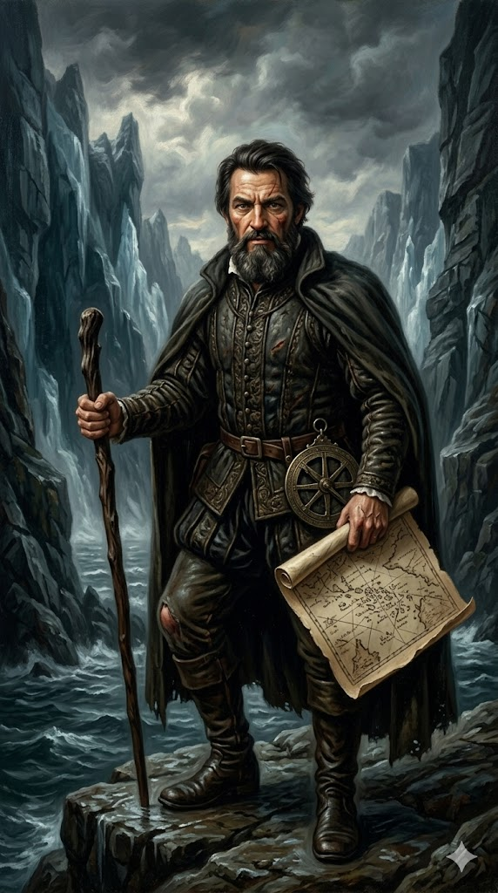

פרדיננד מגלן

לחץ על התמונה להגדלה
מקור ומשמעות השם המלא (אטימולוגיה)
שם פרטי: פרנאו / פרדיננד (Fernão / Ferdinand)
מגלן נולד בפורטוגל בשם פרנאו (Fernão). כשהציע את שירותיו לספרד, הוא התאים את שמו לגרסה הספרדית ארננדו או פרדיננד (Hernando / Fernando).
פירוש מילולי: כמו אצל הרנאן קורטס, השם הוא ממקור גרמאני ויזיגותי (Fardi + Nand), ופירושו "נועז במסע" או "זה שמעז לנסוע". אין שם שהולם בצורה מדויקת כל כך אדם שיצא למסע הארוך והמסוכן ביותר בהיסטוריה האנושית.
שם משפחה: מגליאייש / מגלן (Magalhães / Magellan)
שמו המקורי היה דה מגליאייש (de Magalhães), אשר אונגלז והוספרד ברחבי העולם ל"מגלן".
פירוש: זהו שם משפחה טופונימי (גיאוגרפי) פורטוגלי, ששורשיו ככל הנראה בשפה הקלטית העתיקה (Magal) או במילה הלטינית "Magnus" (גדול / אדיר). הוא מתייחס לבעלות על אחוזות עתיקות בצפון פורטוגל. משפחתו השתייכה למעמד אצולה זוטר (Fidalgo).
ילדות, שירות צבאי באסיה והצלקת ממרוקו
פרנאו נולד בסביבות 1480 בעיירה סברוזה שבצפון פורטוגל. כבן לאצולה, הוא התייתם בגיל עשר ונשלח לשמש כנושא כלים (Page) בחצרה של המלכה לאונור מפורטוגל. שם הוא זכה לחינוך עילאי בקרטוגרפיה, אסטרונומיה וניווט.
החייל המצולק: בניגוד לקולומבוס שהיה בעיקר סוחר, מגלן החל את דרכו כחייל פורטוגלי קשוח. בשנת 1505, בגיל 25, הוא נשלח להודו. במשך 8 שנים הוא נלחם בקרבות עקובים מדם באוקיינוס ההודי (תחת פיקודו של פרנסיסקו דה אלמיידה) והשתתף בכיבוש העיר מלאקה (במלזיה של היום).
לאחר שחזר מן המזרח, הוא נשלח להילחם במרוקו, שם נפצע קשה בברכו מחנית מוסלמית. הפציעה השאירה אותו צולע לכל ימי חייו. למרות שירותו המסור, כאשר ביקש מהמלך העלאה זעומה במשכורתו, המלך סירב בבוז.
אידאולוגיה, מניעים והבגידה בפורטוגל
המסע של מגלן לא נולד מתוך רצון "להקיף את העולם", אלא מתוך זעם אישי וחישוב גיאופוליטי קר.
נסיבות היסטוריות: כיצד שכנע מגלן את מלך ספרד?
עריקתו של קצין פורטוגלי לספרד לא הספיקה כדי לקבל פיקוד על צי ספינות מלכותי. מגלן היה צריך להוכיח למלך ספרד הצעיר (קרל החמישי, שהיה אז בן 18 בלבד) שהסיכון העצום משתלם. הוא עשה זאת בעזרת מערכת קשרים מבריקה וטיעונים לוגיים, אשר התחלקו למספר שלבים:
יציאה לדרך, מרד קטלני וגילוי המצר
בספטמבר 1519 יצא מגלן מסביליה עם צי של חמש ספינות רעועות ו-270 אנשי צוות ממגוון אומות. המסע החל ברגל שמאל: הקפטנים הספרדים שתחתיו שנאו אותו מעצם היותו פורטוגלי, והמרגלים של מלך פורטוגל ניסו לחבל בספינותיו.
חציית האוקיינוס, רעב והמוות בפיליפינים
כשיצאו מהמצר, הם פגשו אוקיינוס שקט ורגוע, ולכן מגלן קרא לו "מר פסיפיקו" (האוקיינוס השקט). אך השלווה הזו הייתה מלכודת מוות.
מגלן, ביהירותו, סירב לקחת כוח אדם גדול, ויצא עם 49 חיילים בלבד נגד 1,500 לוחמים ילידים. עקב מים רדודים, ספינותיו לא יכלו לתת חיפוי אש. הספרדים הוקפו. מגלן (הצולע) נלחם בחירוף נפש במים הרדודים כדי לאפשר לאנשיו לסגת, עד שנפגע בחץ רעל ברגלו ולבסוף חוסל בחניתות. מגלן מת במקטאן ולא זכה להשלים את הקפת העולם בעצמו.
השלמת המסע, קו התאריך והשפעות היסטוריות
לאחר מות מגלן, המשלחת המשיכה אל איי התבלינים, העמיסה ציפורן, אך רק ספינה אחת שרדה כדי לחזור לספרד.
מקורות וביבליוגרפיה (אימות מחקר)
- יומנו של אנטוניו פיגאפטה (Antonio Pigafetta): פיגאפטה היה חוקר פולימאת איטלקי שהתלווה למסע מתוך סקרנות ושילם מכיסו. הוא היה בין 18 השורדים היחידים שחזרו, ויומנו המפורט והדרמטי הוא המקור ההיסטורי העיקרי (וכמעט היחיד) שתיעד מיום ליום את הרעב, המרד, והמוות של מגלן.
- מחקר היסטורי מקיף: Bergreen, Laurence (2003). Over the Edge of the World: Magellan's Terrifying Circumnavigation of the Globe. (אחד מספרי העיון הטובים ביותר המסכמים את הצדדים הפסיכולוגיים, הפוליטיים והפיזיים של המסע).